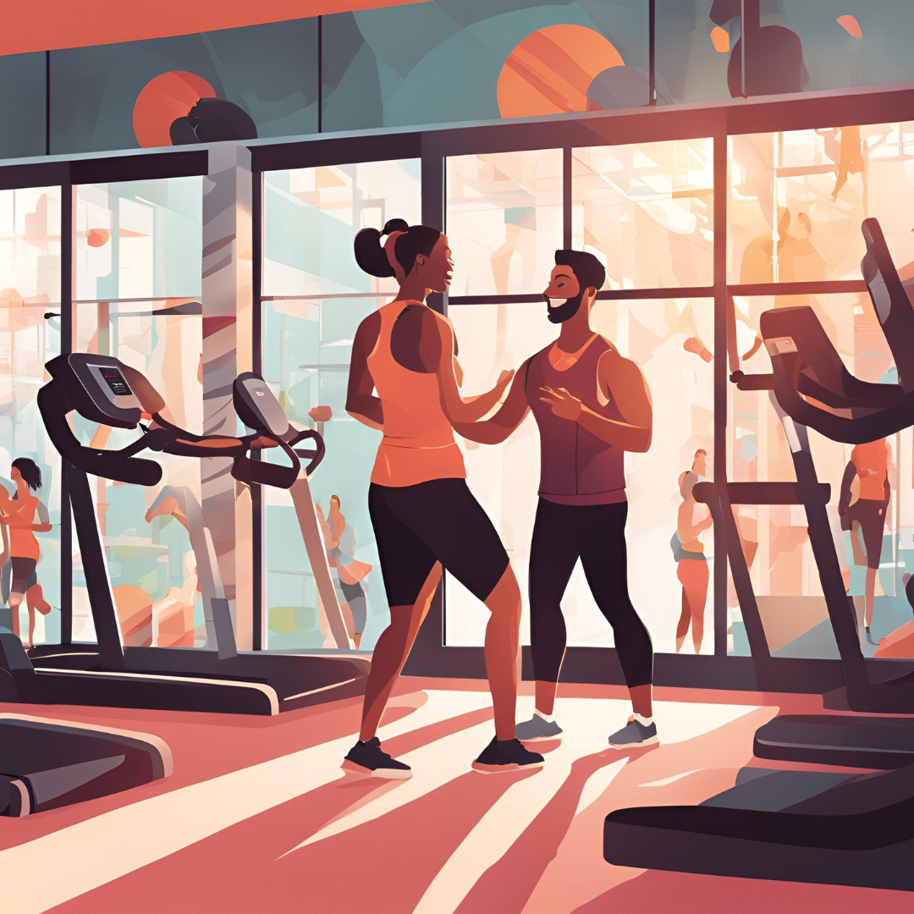

Treinar com personal é realmente eficiente?
A ciência diz que sim?
Quando pensamos em investir na nossa saúde, surge uma pergunta essencial: o treino que realizamos é realmente eficaz?
ciência demonstra que a supervisão de um profissional qualificado potencializa os resultados e reduz o risco de lesões.
Pesquisas como as de Mazetti et al. (2000) e Coutts, Murphy e Dascombe (2004) indicam que indivíduos que
treinam com acompanhamento especializado apresentam maior ganho de força e potência do que aqueles que treinam sozinhos.

Além disso, um treinador individual pode personalizar o treino de acordo com necessidades específicas. Por exemplo:
O investimento em um profissional qualificado não é apenas um custo, mas um benefício a longo prazo. Quer experimentar na prática?
Agende seu treino experimental e veja a diferença!
Estou aguardando sua mensagem.
Mazzetti SA, Kraemer WJ, Volek JS, Duncan ND, Ratamess NA, Gómez AL, Newton RU, Häkkinen K, Fleck SJ. The influence of direct supervision of resistance training on strength performance. Med Sci Sports Exerc. 2000 Jun;32(6):1175-84. doi: 10.1097/00005768-200006000-00023. PMID: 10862549.
Coutts AJ, Murphy AJ, Dascombe BJ. Effect of direct supervision of a strength coach on measures of muscular strength and power in young rugby league players. J Strength Cond Res. 2004 May;18(2):316-23. doi: 10.1519/R-12972.1. PMID: 15142000.
Coutts AJ, Murphy AJ, Dascombe BJ. Effect of direct supervision of a strength coach on measures of muscular strength and power in young rugby league players. J Strength Cond Res. 2004 May;18(2):316-23. doi: 10.1519/R-12972.1. PMID: 15142000.